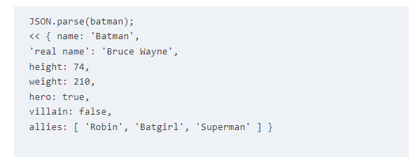
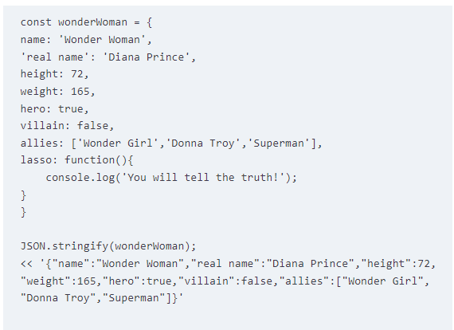

Week 3
Notes
This week was really interesting, reading about Objects, the DOM (Document Object Model), and Events help me to remember a lot of things maybe I was missing when I'm coding, I never had the opportunity to really read a book about programming and I need to say that is something that is helping me a lot to understand and learn new things, I realized that sometimes I always read in forums and some websites about programming but these reading activities are giving me another insight of how we can learn more about programming.
This week I want to show an example about Objects and JSON that I found really interesting is that using the "parse()" method will take a string of data in JSON format and it will return a JavaScript Object.
And the "stringify()" method will do the opposite, taking a JavaScript object and returning a string of JSON data.
Questions
Talking about questions, in the first week I read in the feedback that using the "getElemetnbyId" would be better than the "querySelector" in that case, this week we read about the DOM but I want to know if there is a way or a tip to understand which method will be better to use? I understand that "getElemetnbyId" only works with the "id" attribute but now is making me think a lot about how do I need to use both methods.